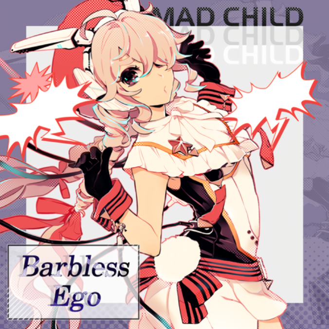
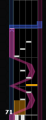
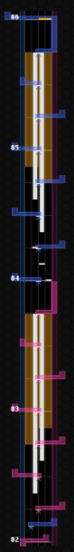
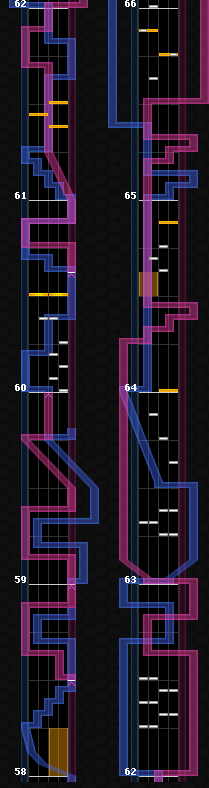
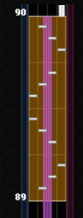

Barbless Ego

4th, 210623

첫 얼체가 퍼얼체.
후반에 난이도가 크게 몰려있다.
겹계단과 딱 한군데짜리 괴랄한 퍼방구간만 제외하면 어렵지 않을 것이다.
퍼펙과는 별개로, 체인수가 많지 않아 스코어가 묘하게 잘 안나오는 곡.
EMERALDAS (Yuta Imai Remix)

5th, 210624

첫 얼체가 퍼얼체.
의외로 초반 노브는 큰 문제가 되지 않는다.
후반에 미리 숙지하지 못하면 반드시 틀리는 구간만 알아 두면 대부분 8비트 패턴이라 쉽다.
水簾ノ調

6th, 210703


퍼얼 최하위급은 아닌 것 같다.
노브 나가리가 의외로 잘 난다. 6볼이 된 이후 더더욱. 최후반 엇박3계단은 요주의 구간.
16비트가 꾸준히 나오기때문에 17렙으로 수련을 어느정도 해야 도전해 볼 만하다고 생각됨.